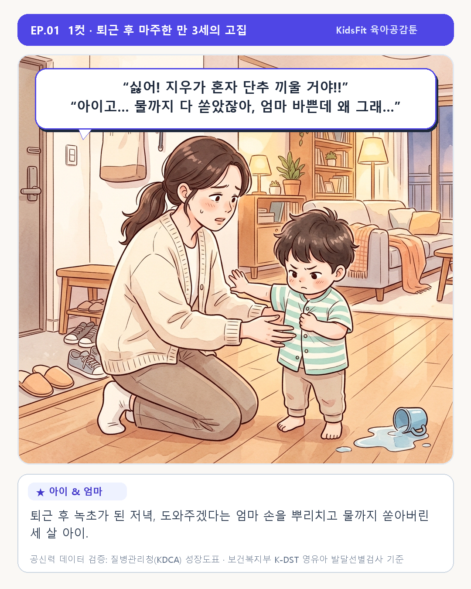
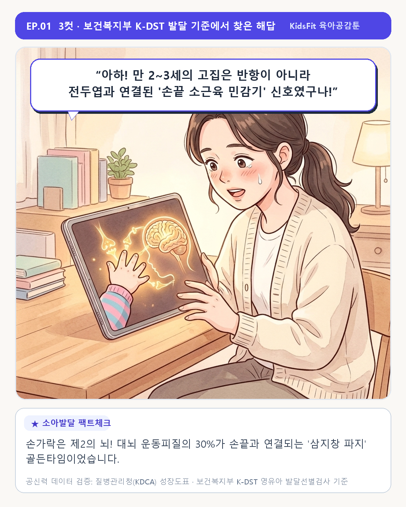

“내가 다 할 거야!” 만 3세 아이의 고집, 혼내기 전에 꼭 알아야 할 '손끝 소근육 민감기'와 밤 10시 성장의 비밀
1. 퇴근 후 현관에서 시작되는 단추 씨름, 왜 이토록 눈물이 날까요?
퇴근하고 돌아와 저녁밥을 올려놓아야 하는 바쁜 저녁 7시. 어린이집 가방을 내려놓기도 전에 세 살배기 아이가 조그만 손으로 외투 단추를 붙잡고 소리칩니다. “싫어! 엄마 가! 내가 혼자 할 거야!!”
마음은 급한데 아이는 10분째 단추 구멍 하나를 끼우지 못해 낑낑대고, 급기야 식탁 위 물컵까지 혼자 따르겠다며 바지에 물을 다 쏟아버립니다. 그날 밤 곤히 잠든 아이의 작은 손을 쓰다듬으며 엄마는 ‘내가 일하느라 바빠서 우리 아이만 소근육이 늦는 걸까?’ 자책하곤 합니다.


2. [공신력 팩트체크 ①] 손가락은 '제2의 뇌' — 대뇌 운동피질의 30%가 손끝에 연결됩니다
신경외과 의사 와일더 펜필드 박사의 뇌 지도(Homunculus)를 보면, 인간 대뇌 운동피질의 무려 30% 이상이 손과 손가락에 배정되어 있습니다. 만 2~3세 아이가 “내가 할 거야!”라며 고집을 부리는 것은 반항이 아니라, 엄지·검지·중지 ‘삼지창 파지(Three-jaw chuck)’와 전두엽 시냅스를 스스로 연결하려는 기특한 발달 본능입니다.
| K-DST 발달 영역 | 만 24~35개월 핵심 이정표 | 만 36~47개월 핵심 이정표 |
|---|---|---|
| ✂️ 소근육 운동 | 책장을 한 장씩 넘기고 큰 구슬에 끈을 꿴다 | 안전가위로 종이를 자르고 세 손가락 삼지창 파지가 형성된다 |
| 🧩 인지 발달 | 크고 작음을 변별하고 도형 판을 맞춘다 | 부분을 보고 전체를 유추하며 원·십자가를 모방해 그린다 |
| 👕 자조 행동 | 혼자 숟가락질을 시도하고 양말을 벗는다 | 큰 단추를 스스로 끼우고 풀며 혼자 손을 씻는다 |
3. 비싼 150만 원 전집 사기 전! 오늘 저녁 거실 '0원 일상 놀이 3선'
손끝 힘이 아직 다져지지 않은 만 2~3세 아이에게 150만 원대 가베(은물) 전집을 들이면 블록이 자꾸 무너져 흥미를 잃기 쉽습니다. 교구를 사기 전 오늘 저녁 주방 서랍으로 시작하는 0원 일상 놀이 3선을 먼저 해보세요:
- ① 나무 빨래집게 ‘악어 손가락’ 놀이: 두부 용기 테두리에 빨래집게를 꽂고 빼며 엄지·검지 악력을 기릅니다.
- ② 물티슈 캡 & 페트병 뚜껑 저금통: 빈 상자에 물티슈 캡을 붙여 페트병 뚜껑을 넣으며 눈-손 협응력을 키웁니다.
- ③ 다 쓴 휴지심 ‘사자 갈기’ 오리기: 도톰한 휴지심 끝을 1cm씩 안전가위로 오리며 가위질 성취감을 선물합니다.
❌ Before: “답답해, 이리 줘 봐! 엄마가 빨리 단추 채워줄게!”
⭕ After: “우리 지우가 스스로 단추를 끼워보고 싶었구나! 악어 손가락으로 단추 끝을 꼭 잡고 구멍으로 쏙 밀어 넣어볼까? 엄마가 옆에서 기다려 줄게!”
4. [공신력 팩트체크 ②] 낮에 손끝을 쓴 아이가 밤 10시 '숨은 키 7cm'도 자랍니다
낮 동안 손끝과 몸을 충분히 움직인 아이는 밤 10시 깊은 서파수면(Slow-Wave Sleep, 일일 성장호르몬의 65% 분비)에 빠르게 진입합니다. 우유 배앓이가 있는 아이라면 아래 보건복지부 한국인 영양소 섭취기준(KDRIs) 자연식 환산표로 칼슘을 채워주세요.
| 연령 구분 (KDRIs) | 일일 칼슘 권장량 | 일일 비타민D / 단백질 | 우유 배앓이 없는 자연식 식탁 1일 환산 예시 |
|---|---|---|---|
| 만 1~2세 | 500 mg / 일 | 400 IU / 20 g | 아기치즈 1장(130mg) + 두부 반 모(140mg) + 잔멸치 볶음 1큰술(120mg) + 요거트 |
| 만 3~5세 | 600 mg / 일 | 400 IU / 25 g | 슬라이스 치즈 1.5장(200mg) + 잔멸치 주먹밥(180mg) + 달걀노른자 1개 + 브로콜리 |
| 만 6~8세 | 700 mg / 일 | 400 IU / 35 g | 두부구이 1모(280mg) + 뱅어포·멸치볶음(220mg) + 소고기 장조림 + 구운 연어 |
🌱 우리 아이 개월 수에 딱 맞는 성장 백분위 & 발달 방향이 궁금하다면?
질병관리청 성장도표와 보건복지부 K-DST 기준을 연동한 무료 진단 리포트를 1분 만에 확인해 보세요.
👉 키즈핏 그로스 스튜디오 무료 진단 바로가기